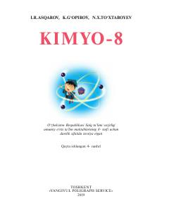

K88-sinf o'quvchilari uchun kimyo fanidan rasmiy darslik.
Mazkur darslik umumiy o‘rta ta’lim maktablarining 8-sinfi uchun mo‘ljallangan bo‘lib, davriy qonun, kimyoviy elementlar sistemasi, bog‘lanish turlari va asosiy mavzularni qamrab oladi. Kitobda nazariy bilimlar amaliy mashg‘ulotlar, namunaviy masalalar va test topshiriqlari bilan boyitilgan holda tushuntirilgan.